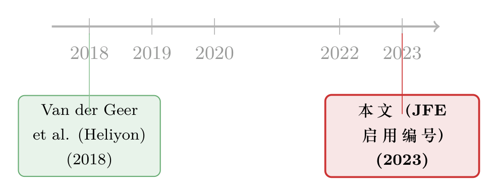

页码消失的那一天：JFE 给每篇文章发了一个「身份证」
本文读的是 Journal of Financial Economics (2023, JFE) 上的一则 Publisher's Note：从第 150 卷第 2 期（2023 年 11 月）起，JFE 正式启用「文章编号（article numbering）」，用一个源自 DOI 的唯一编号取代传统的「页码区间」来标识每一篇论文。这不是一篇研究论文，而是一纸出版流程的公告——但它悄悄改写了我们引用、检索、乃至「定位」一篇金融学论文的方式。
1 一个你大概没注意到的「小数字」
先做个小测验。下面这条引用里，哪一部分其实正在悄悄消失？
Van der Geer, J., Hanraads, J.A.J., Lupton, R.A., 2018. The art of writing a scientific article. Heliyon 19, 100205.
如果你的目光停在了最后那串 100205 上，恭喜你——你看见的正是一个「文章编号」。它站的位置，原本属于一段我们再熟悉不过的东西：页码区间（page range），比如 pp. 215–229。
我们这些天天泡在文献里的人，对页码有一种近乎肌肉记忆的依赖。你说「JFE 那篇 Fama-French 三因子」，脑子里浮现的不只是标题，还有它躺在某一期某几页的物理位置。页码是论文在纸质世界里的「门牌号」。可现在，JFE 告诉我们：从 2023 年 11 月那一期起，这个门牌号要换了。
这事听上去琐碎得不能再琐碎。但正因为琐碎，它才值得说道——因为它触及的，是学术成果如何被唯一地标识这个底层问题。而一个研究者一生要和「引用」打的交道，可能比和任何一个计量模型都多。
2 文章编号到底是什么
公告里把话说得很清楚：
A unique article number is an abbreviated form of an article's DOI - digital object identifier.
也就是说，文章编号并不是凭空造出来的新东西，而是每篇论文早已拥有的 数字对象标识符（digital object identifier, DOI） 的一个缩略形式。引用规则简单到近乎粗暴：用文章编号，去替换掉原来写页码区间的那个位置。其余照旧——卷号（volume）还在，期号（issue）还在。
首先，这意味着每篇文章的页码会从第 1 页重新开始。一期里不再有连续递增的总页码。其次，印刷版的目录（table of contents）会按线上版的顺序排列，纸质读者得靠每页顶端那个清晰可见的文章编号去定位自己想看的文章。最后，连印刷版书脊上的「页码范围」也一并取消了。
换个角度看：过去我们用「这篇文章占了第几页到第几页」来定位它，本质上是在用它在一本实体期刊里的物理坐标来当身份证。而 DOI 从一开始就是为数字世界设计的、全球唯一的逻辑标识。文章编号做的，无非是把那个早已存在、却一直被页码「挡在身后」的真正身份证，请到了台前。
3 接着，一个自然的问题是：为什么现在要改？
如果只是「换个数字」，何必专门发一则公告？公告里给出的理由，其实指向同一件事——纸张这个媒介，正在退场。
公告列了几条「好处」，我把它们翻译成研究者能体会的语言：
- 更灵活的阅读（more flexible reading）：文章内容可以根据访问设备自适应排版，支持「在路上读」，而你不需要知道它在传统印刷版里占了多少页。——注意这句话的潜台词：页码本就是印刷时代的产物，当一篇文章在手机上重新流式排版时，「第几页」根本无从谈起。
- 更灵活的内容编组（grouping related content）：在线合集和专刊（Special Issues）里，文章可以任意排序，帮读者更快找到与自己研究相关的论文。
- 更快的发表（faster publication）：有了文章编号，论文一旦完成校样（proof）修订就能作为「最终记录版本（version of record）」上线并被引用——不必再等它在某一期里被分配到具体页码。
这第三条，才是真正关键的一步。
在旧流程里，一篇论文哪怕早已被接收、定稿，往往还要排队等待被「装订」进某一期、分到页码，才算正式有了可引用的身份。文章编号把这道工序解耦了：身份的确立，不再依赖于它在期刊里的物理位置。于是「线上优先（online first）」的论文，从一个尴尬的「待定状态」，变成了堂堂正正、可被引用的最终版本。
于是反转出现了：我们一直以为页码是论文「天经地义」的一部分，可一旦把媒介从纸换成屏，页码反而成了拖慢发表、束缚排版的累赘。被取消的不是论文的身份，恰恰相反——是那层裹在身份外面、属于印刷时代的「壳」。
4 这对你我意味着什么
公告专门有一节叫「What will change for me?」，落到每一个写论文、引文献的人头上：
引用 JFE 文章时，你需要改用文章编号（就像本文开头那条 Heliyon 的例子）。好消息是，ScienceDirect 上的导出引用（export citation）功能对这种新格式已经原生支持——也就是说，你用文献管理软件一键导出时，它会自动帮你处理好。
这里有个容易踩的坑：JFE 的卷号、期号不会消失，会消失的只是「页码区间」。所以如果你手上有一套老的引用模板，硬性要求填写起止页码，那么对 2023 年 11 月之后的 JFE 文章，你得把那一栏换成文章编号——否则会出现「有卷期、却找不到页码」的尴尬。
说到「找不到」，这正是我想多聊一句的地方。学术记录（scholarly record）的完整与可追溯，从来不是理所当然的。同一份本博客里，有两篇文章谈的恰恰是这条记录如何被修补与撤销——一篇是被作者亲手撤回的 JFE 论文（见《一篇被作者亲手撤回的 JFE：当「公司债四因子」死于一次时间对齐错误》），一篇是关于勘误的（见《一个被修正的「typo」：当 JFE 的勘误，改的其实不是错别字》）。撤稿、勘误、文章编号——这三件看似毫不相干的「出版琐事」，其实共享同一个内核：如何让每一篇文章，在浩瀚的文献海里，被唯一、稳定、可靠地指认出来。文章编号绑定 DOI，让这种指认从「物理页码」升级为「全局唯一标识」，方向上恰恰是更稳的。
5 文献脉络
严格说，这则 Publisher's Note 并不嵌在一条学术「研究脉络」里——它本身不是研究。但它背后有一条清晰的出版实践演进线，公告自己交代得很明白。
公告说，文章编号已经在爱思唯尔的跨学科开放获取期刊 Heliyon，以及另外 1600 多种期刊上成功铺开，并获得学术界的良好反馈；正是基于这些正面反馈，JFE 才决定跟进。而那条作为示范的引用——Van der Geer, Hanraads & Lupton (2018) 发表在 Heliyon 上的 The art of writing a scientific article——恰好就是一篇带着文章编号 100205 的真实例子。于是脉络是这样的：先在 Heliyon 这类数字原生期刊上试水（2018 年的示范文章即此格式），再推广到上千种期刊，最后于 2023 年轮到 JFE 这样的旗舰金融学期刊。

换句话说，JFE 不是这套做法的先驱，而是一个审慎的后来者——等到 1600 多种期刊验证过、社区也接受了，才把它请进门。对一本以严谨著称的顶级期刊而言，这种「让子弹先飞一会儿」的姿态，本身也算合乎其性格。
6 评论与延伸（Q&A + 研究方向）
(a) 几个可能的疑问
Q：文章编号和 DOI 到底是不是一回事？
不完全是。公告说得明确：文章编号是 DOI 的一个缩略形式（an abbreviated form of an article's DOI）。DOI 是那串完整的、带前缀的全局标识（如
10.1016/...），而文章编号是从中提取出来、用于在引用里替代页码的那一小段。可以理解为：DOI 是「全名」，文章编号是日常引用时用的「简称」。
Q：那卷号、期号也要取消吗？
不取消。公告原文：While journal volumes and issue numbers will remain in place, article numbering will now play the key role in identifying specific articles. 卷与期都保留，只是「定位具体文章」这个职责，从页码移交给了文章编号。
Q：以后每篇文章的页码都从第 1 页开始，会不会乱套？
这正是设计的一部分。每篇文章自带从第 1 页起的内部页码，但整期不再有连续的总页码。定位靠的是每页顶端印着的文章编号，而非「全期第几页」。对线上阅读毫无影响；对纸质读者，则要适应用编号而非页码来翻找。
Q：我现有的文献管理流程要大改吗？
基本不用。公告特别说明，ScienceDirect 的导出引用功能已经原生支持新格式。真正需要你手动留意的，只有那些硬性要求填写起止页码的老模板或老格式——对新 JFE 文章，那一栏要换成文章编号。
Q：这会不会让老论文和新论文的引用风格「不统一」？
会有一段并存期。2023 年 11 月之前的 JFE 文章仍是页码区间，之后的是文章编号。这在文献列表里会形成一种「新旧混排」的观感，但并不影响检索——因为 DOI 始终是唯一可解析的锚点。
Q：JFE 为什么不更早做？
从公告的措辞看，这是一种「基于正面反馈」的审慎跟进：先有 Heliyon 和 1600 多种期刊的先行验证，JFE 才在 2023 年第 150 卷第 2 期启用。顶级期刊在改动引用这种「基础设施」时偏保守，可以理解。
(b) 几个可能的研究问题与提案
提案一：文章编号会改变论文的被引轨迹吗？
【经济故事】引用的「摩擦」越小，论文被引用得是否越早、越多？「线上优先即可引用」理论上缩短了从定稿到可被引用的时滞，可能让前沿论文更快进入引用网络。 【可行性】中。需要爱思唯尔/Crossref 的 DOI 与引用时间戳数据，对比启用文章编号前后（2023 年 11 月为断点）JFE 论文的早期被引速度。可用断点/双重差分思路，但混入了「线上优先」等同时发生的流程变化，干净识别较难。
提案二：「页码消失」对文献计量指标的扰动。
【经济故事】许多文献计量工具、乃至研究者的检索习惯，仍隐性依赖页码。当页码不再连续，自动化的引文匹配是否会出现更高的错配率？ 【可行性】高。可抓取一批启用编号后的 JFE 引用，检测主流数据库（Web of Science、Scopus、Google Scholar）对同一文章的元数据一致性与错配率。纯描述性，数据可得，doable。
提案三：可被引用时滞与作者的「抢发」行为。
【经济故事】如果定稿后能更快获得可引用的最终版本，作者在竞争激烈的子领域（如资产定价、公司金融）是否会调整投稿与披露策略？ 【可行性】中偏低。机制有趣，但「时滞缩短」难以与期刊其他流程改革分离，且作者行为数据（投稿时间线）通常不公开，识别困难，诚实说不易做扎实。
这三个方向都属于「出版基础设施 → 研究者行为」的元研究（meta-research），与本博客主线关注的公司债、外资持有人、流动性等议题距离较远；列在此处，只是顺着这则公告自然引出，供有兴趣者参考。
7 我的判断
坦白讲，把一则两页的 Publisher's Note 当成「论文」来评述，本身就有点名不副实——它没有研究问题、没有识别策略、没有数据、没有系数，自然也谈不上模型与稳健性。它的全部内容，就是宣布一个引用格式的切换。
但如果一定要给个判断：这是一件方向正确、影响微小、却不容忽视的小事。
说它方向正确，是因为它把论文身份的锚点，从印刷时代的「物理页码」迁移到了数字时代的「全局唯一 DOI」，这与撤稿、勘误等机制共同服务于同一个目标——让学术记录更可追溯。说它影响微小，是因为对绝大多数读者，文献管理软件已经悄悄替你消化了这个变化，你甚至可能从未察觉。说它不容忽视，是因为引用是研究者使用频率最高的「基础设施」，任何此类底层变动，都值得我们花两分钟搞清楚——免得某天在投稿系统里，对着一篇 2024 年的 JFE 文章，怎么也填不出那一栏「页码」。
至于「对识别的担忧」——这里没有识别可担忧。我唯一想看到的后续是：几年后回头看，文章编号有没有像公告承诺的那样，真的让前沿研究「被读到、被引到」得更快一点。那将是一个可以用数据回答的、真正的实证问题。
参考文献
Van der Geer, J., Hanraads, J.A.J., Lupton, R.A. (2018). The art of writing a scientific article. Heliyon 19, 100205. https://doi.org/10.1016/j.heliyon.2018.100205
van der Zant, L. (2023). Publisher's Note: Introducing article numbering to Journal of Financial Economics. Journal of Financial Economics 150(2), 103732. https://doi.org/10.1016/S0304-405X(23)00172-1